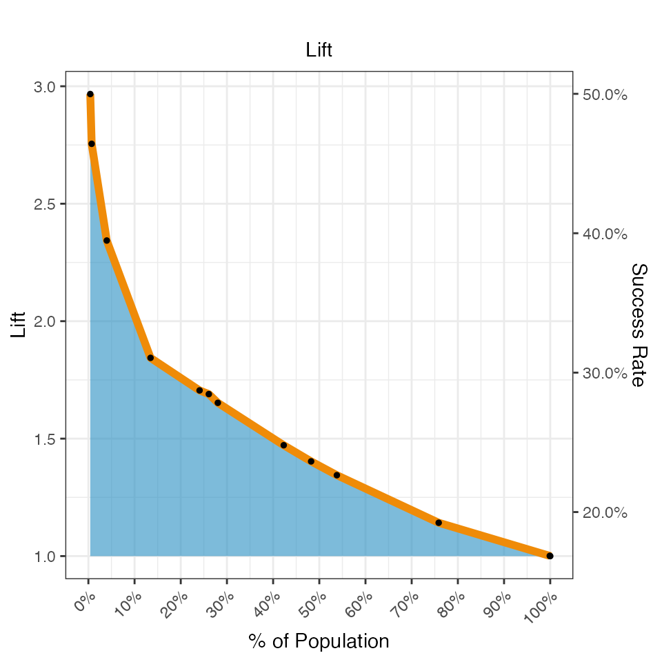
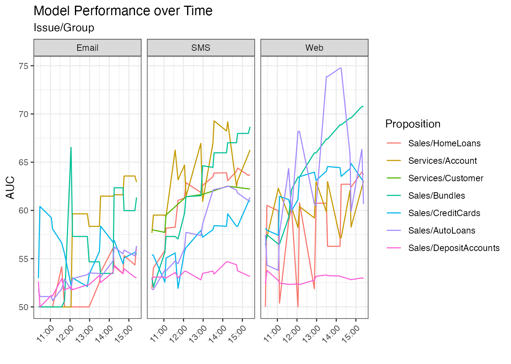
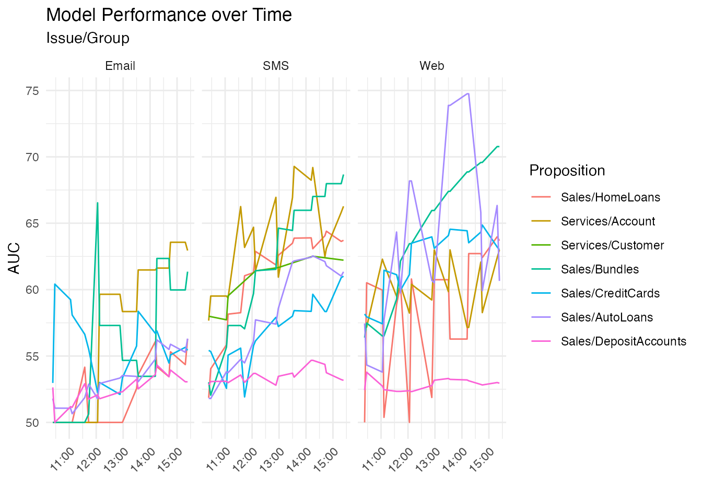
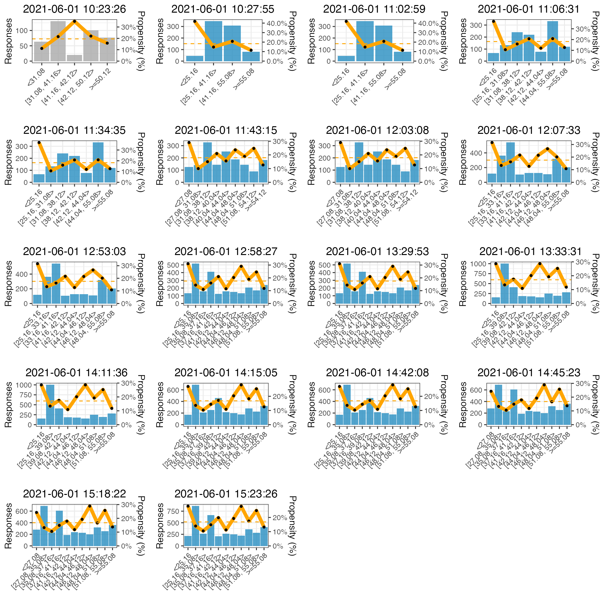

adm-datamart
Pega
2021-10-05
adm-datamart.RmdADM Datamart
The ADM Datamart is an open database schema where the ADM models and all predictors are copied into. The standard ADM reports both in Analytics Center as well as in the Report Browser (Adaptive category) work off this schema.
Since the schema is open we can easily use it to create our own reports and support measurements and plots not available in the OOTB reporting in Pega.
Data Loading
Let’s first load the data. An example export is provided with the package. Ways to load your own data from the database or from a dataset export will be described later.
Data Loading using Datasets
To load your own data, export the datasets from Pega, download them to your filesystem and let the cdhtools library import it. In order to be able to process the data universally we also make sure to make the names lower case and make sure the types are as expected by the snippets that follow below. This would also be a good place to zoom in to specific models relevant to your application.
admdatamart_models <- readADMDatamartModelExport("~/Downloads")
admdatamart_binning <- readADMDatamartPredictorExport("~/Downloads", noBinning = F)The data may contain multiple snapshots. For this notebook, we have explicit variables with and without this trend information. Normally you would pass an option to keep all snapshots or not when reading the data, or configure it in Pega to store it in the first place.
admdatamart_models_latest <- latestSnapshotsOnly(admdatamart_models)
admdatamart_binning_latest <- latestSnapshotsOnly(admdatamart_binning)Detailed Reports
With the data loaded, we can start with a plot similar to what the Analytics Center provides OOTB, however here we have more flexibility to slice & dice.
plotADMPerformanceSuccessRateBubbleChart(admdatamart_models_latest, facets = c("Issue", "Channel")) +
scale_x_continuous(limits = c(50, 70), name = "Performance") +
geom_vline(xintercept=c(52,90), linetype="dashed")
We can zoom in into the performance and success rates of the various channels. Here you see that success rates for e-mail are low, as is the average model performance.
plotADMPerformanceSuccessRateBoxPlot(admdatamart_models_latest, "Channel") +
scale_x_continuous(limits = c(50, 70), name = "Performance") + coord_flip()
The below plot shows the predictor performance across the selected models. It is similar to one of the reports in the set of out of the box reports available through the Report Browser (“Adaptive” category), however that one does not do a weighted average of the performance. This one does, so gives a more accurate picture.
plotADMPredictorPerformance(admdatamart_binning, admdatamart_models_latest) +
scale_fill_discrete_sequential(palette="SunsetDark") +
theme(axis.text.y = element_text(size=8), strip.text = element_text(size=8))
You could also show the predictor performance in one plot across all predictors for all the selected models. Also arranging by performance in both dimensions gives a quick visual clue of which predictors and which models need attention.
plotADMPredictorPerformanceMatrix(admdatamart_binning_latest, admdatamart_models_latest,
aggregation="Name") +
theme(axis.text.y = element_text(size=6),
axis.text.x = element_text(size=6, angle = 45, hjust = 1))
Alternative Performance Metrics
With all the data available in the datamart, you are not restricted to just reporting. Using the binning information for all of the predictors, you could, for example, calculate the KS score of the models. The KS (Kolmogorov–Smirnov) score is related to the AUC that we use by default, but instead of the areas under the ROC curve, it gives the maximum separation between the true positive and false positive rate.
The below snippet calculates the KS score for all predictors of all propositions and shows them next to AUC reported by ADM.
admdatamart_binning_latest[ , Propensity := BinPositives/(BinPositives+BinNegatives)]
setorder(admdatamart_binning_latest,Propensity)
myKS <- function(binning)
{
Goods <- cumsum(binning$BinNegatives) / sum(binning$BinNegatives)
Bads <- cumsum(binning$BinPositives) / sum(binning$BinPositives)
KS <- (max(Goods - Bads))
return(ifelse(is.na(KS),0,KS))
}
performanceSummary <-
left_join(admdatamart_binning_latest[, .(KS = myKS(.SD),
auc = first(Performance)),
by=c("ModelID", "PredictorName","EntryType")],
admdatamart_models_latest,
by = c("ModelID"))
## Show KS numbers
ggplot(performanceSummary[KS > 0.01],
aes(Name, factor(PredictorName,
levels=c(setdiff(sort(performanceSummary$PredictorName,decreasing = T), "Classifier"),"Classifier"))))+
geom_raster(aes(fill=(EntryType=="Classifier")))+
labs(x="",y="",title="Kolmogorov–Smirnov scores")+
geom_text(aes(label=sprintf("%.2f%%",100*KS)), size=2)+
scale_fill_brewer(palette="Spectral")+
guides(fill="none")+
theme(axis.text.x = element_text(size=6),
axis.text.y = element_text(size=6))+
scale_x_discrete(position = "top")
Gains and Lift Charts
In the product models are represented by a score distribution plot like below
model <- admdatamart_binning_latest[ModelID %in% admdatamart_models_latest[Name=="FirstMortgage"]$ModelID]
plotADMBinning(model[EntryType == "Classifier"]) +
ggtitle(paste(unique(model$Name), collapse=","), subtitle = "Classifier")
The same data can be represented as a cumulative gains chart, which indicates the percentage of positive responses as a function of the size of the population targeted.
plotADMCumulativeGains (model[EntryType == "Classifier"]) +
ggtitle(paste(unique(model$Name), collapse=","), subtitle = "Cumulative Gains")
A similar view is given by the cumulative lift graphs. This gives insight into what percentage of the customers should be targeted by the models to achieve a certain lift in response rates. Both plots are included in the off-line model reports.
plotADMCumulativeLift (model[EntryType == "Classifier"]) +
ggtitle(paste(unique(model$Name), collapse=","), subtitle = "Lift")
Sensitity Analysis
Showing the overall predictor contributions to the models. Behind the scenes the ADM models are translated to score cards, and the weights of all score card elements are used to determine the overall weight of the predictors.
Here we “facet” by model rule (ConfigurationName) but you can also leave this out or facet by e.g. Channel or Issue.
The provided plot function is fairly trivial. For simple use cases it will be sufficient and the plot can still be decorated using standard ggplot constructs as shown.
varimp <- admVarImp(admdatamart_models_latest, admdatamart_binning, c("ConfigurationName"))
plotADMVarImp(varimp) +
theme_bw() + scale_fill_viridis_c(begin=0.5, end=0.9)
Trend charts
Out of the box, model data is stored over time. This allows trend charts to be created for the performance of models.
The below plots nicely show how the models ramp up over the course of a few hours. We aggregate up to Group level to avoid having too many lines in the plot.
plotADMModelPerformanceOverTime(admdatamart_models, aggregation = c("Issue", "Group"), facets = "Channel")
All the plotting functions are fairly straightforward and built on ggplot and data.table. When there is no standard supporting plot function, it is easy enough to write your own. For example, to show the performance of the Age predictor over time and across all models.
predictorPerformanceTrend <- admdatamart_binning[startsWith(PredictorName, "Customer.A") & BinIndex == 1, .(Performance = 100*mean(Performance)), by=c("SnapshotTime","PredictorName")]
ggplot(predictorPerformanceTrend, aes(SnapshotTime, Performance, color=PredictorName)) +
geom_line(size=1) +
ggtitle("Performance over Time")
Binning Evolution
With the detailed binning information available over time, we can show how the binning of a predictor evolves. You see that the number of bins grows as more data becomes available. You also see that this predictor isn’t always active (grey instead of blue).
binningOverTime <- admdatamart_binning[PredictorName=="Customer.Age" & ModelID == model$ModelID[1]]
grid.arrange(grobs = lapply(sort(unique(binningOverTime$SnapshotTime)), function(t) {
plotADMBinning(binningOverTime[SnapshotTime==t]) +
ggtitle(t)}))